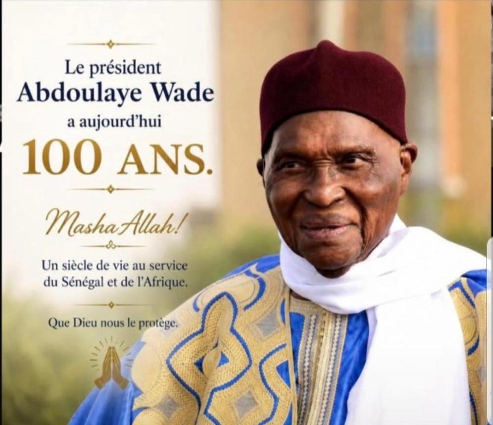

« Le Lièvre » qui a traversé un siècle

Né le 29 mai 1926 à Kébémer, Sénégal
Entre génie visionnaire et tacticien machiavélique, Abdoulaye Wade reste ce paradoxe fascinant que Léopold Sédar Senghor surnommait « Ndiomboor » — le Lièvre. Père de la démocratie sénégalaise le jour, bâtisseur obstiné chaque nuit.
Fils d'un tailleur et tirailleur sénégalais, il gravit tous les échelons du savoir — de Kébémer à Paris — pour devenir avocat, économiste et homme d'État d'envergure continentale. Sa vie est un hymne à la résilience.
Avec une dualité shakespearienne — à la fois libérateur et autocrate, bâtisseur et rêveur obstiné —, il incarne ces figures dont l'héritage ne se lit jamais de manière linéaire.
Filtrez par période pour explorer les moments clés qui ont façonné l'homme et le pays.
En douze ans, Wade a transformé le visage du Sénégal. Voici les héritages les plus marquants qu'il lègue aux générations futures.
Des paroles d'Abdoulaye Wade aux grandes voix de l'humanité — choisissez votre source d'inspiration.
Pour le jeune Sénégalais, l'homme d'affaires, le politicien ou le journaliste — les vérités universelles tirées d'un siècle d'existence.
Naviguez dans les grandes phases qui composent le roman d'une vie centenaire.
Né le 29 mai 1926 dans une famille modeste, Abdoulaye Wade grandit dans un Sénégal sous domination coloniale française. Son père, Momar Tola Wade, est tailleur et tirailleur — un homme de devoir qui lui transmettra l'exigence et la rigueur.
Dès l'école primaire de Kébémer, le jeune Abdoulaye montre une curiosité insatiable. Il questionne, il remet en cause, il cherche à comprendre. Un instinct naturel que l'éducation traditionnelle cherche parfois à étouffer — et que lui refusera toujours d'abandonner.
En 1947, il est diplômé de l'école William Ponty de Sébikotane — l'école des futures élites africaines — et obtient une bourse pour poursuivre ses études en France. Le monde s'ouvre. L'aventure commence.
Treize ans en France. Pas des années de plaisir ou de tourisme intellectuel — mais de travail forcené. Lycée Condorcet (mathématiques supérieures), puis double doctorat : en économie à Grenoble, en droit à Besançon.
À Besançon, il rencontre Viviane — celle qui sera sa compagne de vie, mère de Karim et Sindiély. L'amour naît dans les bibliothèques et les couloirs d'université. Une complicité qui traversera les décennies.
De retour au Sénégal, il devient avocat et professeur à l'Université Cheikh Anta Diop. Sa première grande cause : défendre son propre père, tirailleur de la Première Guerre mondiale sans pension ni médaille à cause d'une erreur administrative. Il plaidera jusqu'à obtenir gain de cause — la Croix de guerre et la Légion d'honneur, remises par Charles Hernu, ministre français de la Défense.
En 1974, Wade fonde le Parti Démocratique Sénégalais (PDS). Il convainc Senghor — avec la ruse du « Ndiomboor » — d'ouvrir le multipartisme. Première victoire politique, sans avoir gagné une élection.
Suivront quatre défaites électorales : 1978, 1983, 1988, 1993. Des crises profondes, des emprisonnements, des périodes d'exil à Versailles. Mais Wade ne cède jamais. Il fait de l'opposition un métier, de la résilience une doctrine, du « Sopi » un espoir collectif.
Ces années forgent l'homme autant que le politique. C'est dans l'adversité qu'il développe sa vision pour le Sénégal du XXIe siècle — nettement plus futuriste que celle de ses adversaires socialistes.
Le 19 mars 2000, le Sopi emporte tout. À 74 ans, Wade devient Président de la République. Il injecte un « coup de jeune » paradoxal : sa vision du Sénégal est la plus moderne, la plus audacieuse de toutes celles proposées depuis l'indépendance.
En douze ans : autoroute à péage, aéroport Blaise Diagne, Monument de la Renaissance africaine, universités régionales, cases des tout-petits, loi sur la parité, plan Sésame. Un bilan infrastructurel sans précédent dans l'histoire récente du Sénégal.
Mais son rapport à l'argent public, les scandales financiers et sa volonté de transmettre le pouvoir à son fils Karim fracturent son image. Le 23 juin 2011, le peuple descend dans la rue. En 2012, Macky Sall — son propre poulain — le bat. Il reconnaît sa défaite et part.
Après 2012, Wade ne disparaît pas de la scène. Il reste actif, observe, commente, guide son parti. Son héritage politique — l'alternance démocratique de 2000, les réalisations infrastructurelles, la loi sur la parité — reste ancré dans la mémoire collective sénégalaise.
Le 29 mai 2026, il célèbre ses 100 ans. Un siècle. Une vie qui embrasse l'Afrique coloniale, l'indépendance, la construction nationale, les premières alternances démocratiques et l'émergence de la nouvelle génération africaine.
Son vrai legs n'est pas une statue ou un bâtiment — c'est la preuve vivante qu'un Africain né pauvre peut, à force de travail, de savoir et de résilience, changer le cours de l'histoire de son pays.